The Pro Return¶
Bobby Bernstein
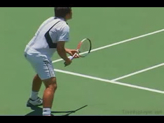
The pro return: more complex than we may assume.
What happens when pro players hit the return of serve? It's a simple question, without a simple answer
As Administrator of Coaching Education for USTA Player Development, I have been filming and studying the top players for the last few years, including their returns. What our filming to date shows may surprise you. So let's have a look at some important and sometimes debated issues. These include:
The Split Step
Positioning
Types of Returns
Grips in the Ready Position
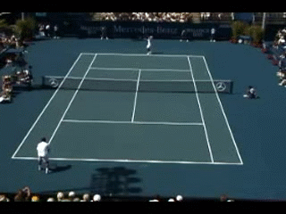
The film shows that the split step begins before the server hits and that pro players are in the air at contact.
The Split Step
Conventional wisdom says that the returner should split step as the server makes contact with the ball. The film shows this isn't quite how it happens. What we actually see is that most players are already in the air at the time of the contact. The split step actually begins a few fractions of a second before the server hits. At this point the server's racket is still on it's way up to the ball.
The second thing the film shows is that pro players don't actually land in the split step position until the ball is about half way to them, or roughly when the ball crosses the net. This makes sense when we think about the amount of reaction time it takes for the body to respond and move to a fast moving event like a 130mph serve. Work by famed tennis physicist Howard Brody suggests that it takes about 3/10s of a second or a little more for the body to react and begin to move in tennis or other sports. This is about the time it takes that 130 mph serve to reach the net.
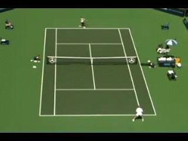
As he lands on the court, Agassi's left foot has already flaired in the direction of his backhand return.
But there is something else. Traditionally when we think of the split step we think of the player landing on both feet in a balanced position ready to move either way to the ball. That's not always how it happens on the pro return. Take a close look at the feet as the players come down. You'll see that before the player lands on the court, the foot closest to the ball can actually start to flare in the direction of the return. This is the start of the turn or the preparation for the return.
So the players are starting the split step well before contact. They do this by unweighting before the server hits. This puts them in the air at contact. And sometimes they are actually starting their move to the ball before they land on the court. Were players taught this? I don't think so. It's an adaption developed through experience over time. <<Similar to an antelope jumping to see where the predator is and change direction to run away in an opposite direction when landing…>>
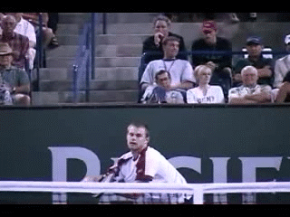
Do expert returners focus on the upper body for clues about the serve?
Can it be developed, and if so how? The conventional wisdom is that the key is to timing the return is focus on the ball and react to the contact. But there is some interesting new research that suggests something different. A study done by a researcher in Virginia used goggles to record what the players did with their eyes on the return. What she found was that expert returners focused on the ball, but they were also looking at the body of the server, particularly the upper body. The same research showed that novice players didn't do this, but could be looking at different areas around the court almost randomly.
Probably what this indicates is that the brain of the returner is picking up clues about the return from watching the body of server. They might not know or be able to explain what those clues are because it probably happens subconsciously. It's just something that the player's develop automatically from focusing on the right area of the body. This may explain some of the footage we've seen in which a player like Pete Sampras appears to be reacting and starting his move to one side faster than research says is humanly possible.
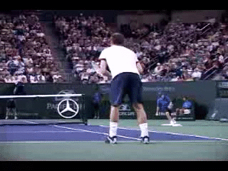
Return practice should simulate match play.
Practicing Recognition
To build up your own recognition skills, it is important to make practicing similar to match play. This means the returner shouldn't know in advance where the serve is going. This is a common mistake I see. Coaches sometimes tell players where the serve is going, or hit multiple serves over and over to the same location. This inhibits the returner's ability to react properly. Imagine approaching the net and knowing ahead of time that the passing shot was going down the line. If you practiced this you would lose the anticipation necessary to be an effective volleyer. Be careful that you aren't impeding your natural ability to develop anticipation.
Return Position
Now let's take a look at where the players stand on the returns on both first and second serve, and how this is sometimes related to the type of return they hit. We think that the great returns in tennis are the ones players hit early or on the rise.
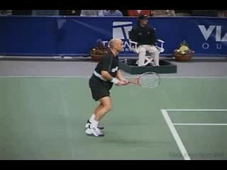
We're used to thinking of players moving in to hit big returns.
These are the type of returns we have seen Andre Agassi hit so many times, or Jimmy Connors before him. What we see on these returns is that the motions are very compact. The player is using the speed of the ball, and timing the return, usually playing the ball on the rise. Often the returner will be up on the baseline or even slightly inside it when he makes contact. This has all been widely noted.
One thing that hasn't been as widely noticed is a completely different strategy. It's one that is becoming more and more common in pro tennis, especially on the second serve. Instead of moving in and using a compact motion, you see many players moving back and taking a bigger swing. Normally we think of moving back as an option for a first serve, to give more time. But now you'll see a player like Roger Federer move back and run around to hit a big forehand on the second ball, particularly in the deuce court. The swing here is usually comparable to a normal groundstroke. You even see this at times with a player like Agassi.
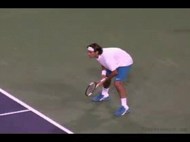
Moving back to hit a big return with a big swing.
What's the advantage? First, the ball slows down and spin outs. It loses some of the energy. This means the returner can often hit the ball on the way down, after the top of the bounce. This makes it easier to time. This also makes the contact at a more comfortable height. From this position the returner can hit an aggressive return, again similar to a groundstroke. He can also neutralize the serve and start the point with a deep, heavy topspin ball. This works well against players who aren't serve and volleying.
There's another potential advantage to this strategy that we don't usually think about, and this has to do with court position. It's great to hit aggressive returns up on the baseline. They can be very dramatic when they work. But it's also possible to hit yourself out of position with an aggressive return. The problem is that unless the return is a winner or really forces the opponent, it can leave the court open and make you vulnerable. By moving back, the returner not only gets to take a bigger swing, he is in a better position to defend and to cover the court.
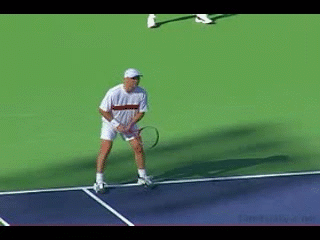
On an aggressive return you can move in so far that you leave the court open.
On the return, if you are near the sideline you can move so far into the court that, all of a sudden the entire other half of the court is open. Now basically any ball the opponent hits to the open court can end up being a winner. Or if it isn't a winner, its can put the returner in dire circumstances, making it extremely difficult to recover and get control of the point. So just focusing on striking the return aggressively can actually backfire. It needs to be linked to how you want to play the rest of the point.
Effective returning in pro tennis is a combination of being in the proper position, picking the right shot, and picking the right placement. It's not a matter of just good ball striking. The question is where do you put that return to give yourself the best opportunity to start off the point?
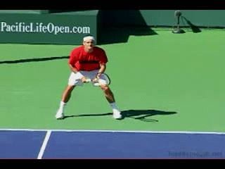
Note Federer's incredible balance as he moves in and neutralizes with a backhand chip.
Neutralize the First Serve
This brings us to one more interesting return option we are seeing more and more in the pro game. It's a play Federer uses to neutralize big servers. Rather than moving back to gain time, Federer actually moves in and then chips the ball, especially on the backhand. Taylor Dent does it too. He also chips a large percentage of his forehand returns.
As a coach I think the idea of getting the ball back in play is underrated. You can't win the point if you don't give yourself the opportunity to play the point. So make the return. Force the server to play the ball. Make sure you don't hit yourself out of position. You don't necessarily have to take the offense away from the server with the return. Try neutralizing the serve first.
One very effective play here is deep down the middle. The exchanges in pro tennis are so fast now that the server's often have trouble recovering if they have to back up to hit that next ball. Don't give the server a ball that he can more forward inside the baseline and hit. Force him to stop or even back up to play the next shot.
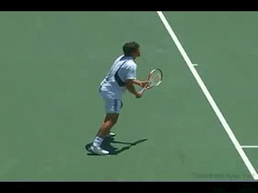
Waiting with a continental allows players to neutralize with a chip return.
So what we have seen is a reversal of conventional wisdom in two different ways. The first reversal has to do with our understanding of an aggressive return. We're used to thinking that when players move forward they're thinking attack. But by moving back you can be aggressive in different way. This is by giving yourself time to load and take a bigger swing at the ball.
We're also used to thinking that players move back to neutralize a big serve. The second reversal is that, besides moving forward to hit, players now move forward to neutralize and start points by chipping with underspin. This is one of the things that makes Roger Federer so complete.
He can execute all these options as well or better than any other player.
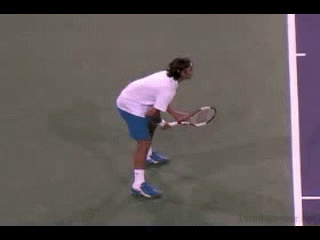
A complete player with a complete return game.
Grips
A final area we have looked at in our filming is return grips. In the ready position, which grip or grips do the players wait with? Although there are exceptions, such as Rafael Nadal, who holds his left hand on the racket throat when he returns, most two handed players hold the racquet with both hands on the racket. Their left or top hand will be in the normal grip they use on the backhand. But with the right hand, they'll hold their forehand grip. If the return comes to their backhand, they'll rotate the right hand toward the top of the frame to create their normal backhand grip structure.
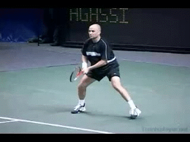
Two handers wait with a forehand grip and rotate the hand during the turn.
One handed players have more variety in the grips they wait with. They might wait with either the forehand or the backhand grip in the ready position. However, players who chip a lot of returns, like Federer and Dent, will wait with an in between grip. Most players who wait with an in between grip will then switch to their normal forehand groundstroke grip if they are going to swing. Interestingly, Federer does something a little different. When he drives his forehand return on the first serve, he uses a slightly less extreme grip than his normal groundstroke. There was another pretty good player who did the same thing: Pete Sampras.
On the backhand, virtually all the one handers go to their regular backhand grip if they decide to swing. What it all seems to mean is that it's important to wait with grips that are appropriate to the range of returns you actually hit.
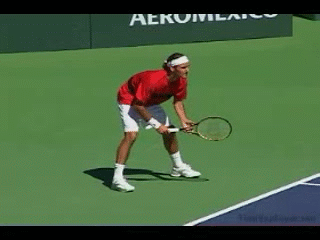
Federer hits drive returns with a less extreme grip.
The importance of the serve in today's game is widely recognized, but the equal importance of the return is often overlooked. Next time you watch a match focus on the returner and try to notice what they are really doing. As with the variety in the modern pro serve, there are many ways to return. Players should have multiple options when it comes to getting the ball back. This is why it is important to practice against a variety of servers and types of serves. Developing your own return skills is definitely vital to getting to the next level, whatever your ambitions or current level of play.
Bobby Bernstein is the USTA Administrator of Coaching Education, based in Key Biscayne, Florida. During the last 10 years as a USTA National Coach, he has worked with virtually every top young American in the player development program, including Andy Roddick. Currently Bobby is spearheading a major filming initiative for USTA, recording and analyzing the strokes of dozens of world class players and sharing the results with players and coaches throughout the country. Prior to working at the USTA, Bobby coached three years at the Palmer Tennis Academy. He was also Director of Tennis at the Wightman Tennis Center in Weston, Massachusetts. Bobby graduated from Brandeis University in 1985 with a degree in American Studies, where he captained the men's tennis team.